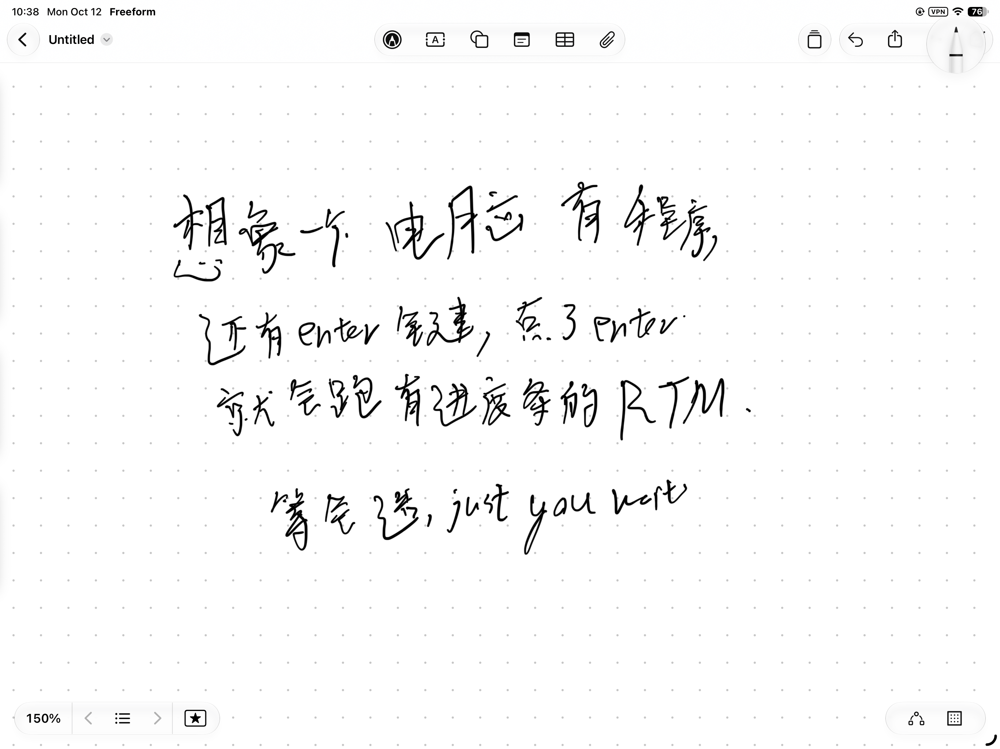
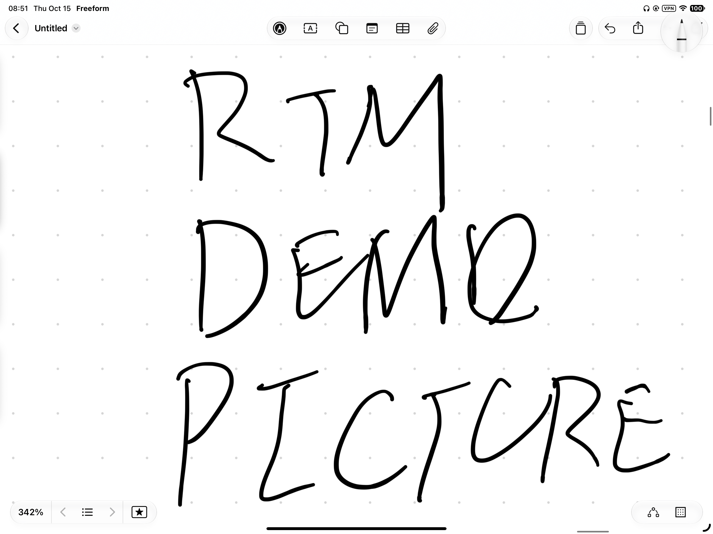
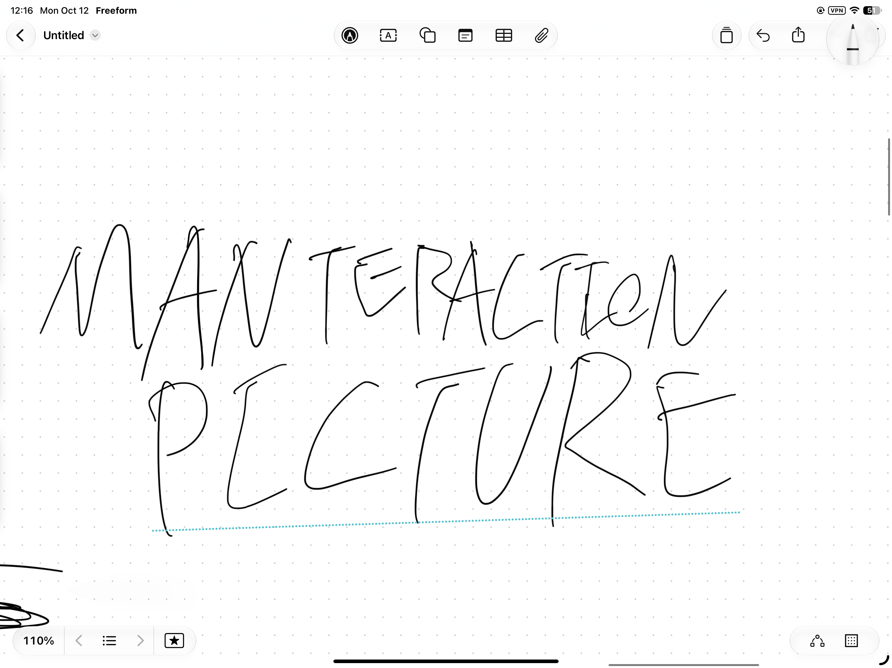

pip install real-time-manim
pip install real-time-manim

Real time, because rendering stops being a time limitation. Real life, because you watch your animation happen instead of waiting for it.
With the rebuilt pipeline, real-time-manim shows you every single frame as soon as it renders. Reworking and adjusting your scene is quick and easy, and you always know where you are.
Start with the Manim code you already write. Zero API changes. End somewhere ManimCE can't reach: Vulkan.

real-time-manim is built on Vulkan, replacing ManimCE's OpenGL and Cairo renderers. Vulkan is a modern, low-level GPU API — direct control of the hardware means faster, hardware-accelerated rendering, with native per-type senders: a dedicated pipeline for each shape you draw.
[test number]
Per-feature tests and scripts that verify real renders will back it up. Bugs caught before you ever see them.

real-time-manim is the basis. Manteraction is the artifact: math animation you won't just watch.